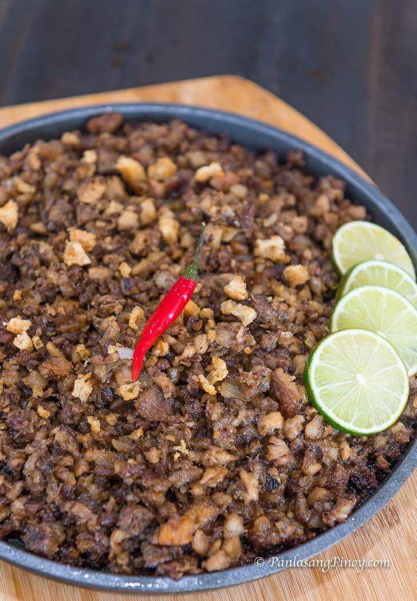

Back

Delicious Sisig from the Philippines
Sisig refers to a finely chopped pork dish of Filipino origin. This recipe uses pork belly and maskara (pig face).
It is popular in the Philippines and is now gaining popularity worldwide. It can be consumed as an appetizer and a main dish.
Ingredients
- 1 ½ lbs. Pork belly
- 3 tablespoons Knorr Liquid Seasoning
- 1 lb. pig face maskara
- 4 ounces chicken liver
- 2 pieces onion
- ½ cup chicharon crumbled
- 3 tablespoons Lady’s Choice Mayonnaise
- 2 teaspoons onion powder
- ¼ teaspoon ground black pepper
- ½ teaspoon chili flakes optional
- 1 tablespoon butter
- 3 tablespoons cooking oil
- 2 quarts water
Steps on How to Make Sisig
- Boil water in a pot. Add pork belly and pig face. Cover and continue to boil for 1 hour in medium heat. Drain water and let the meat cool down.
1 ½ lbs. Pork belly, 2 quarts water, 1 lb. pig face
- Grill boiled meats for 5 minutes per side. Remove from the grill and chop into small pieces. Note: feel free to mince the meat if preferred.
- Heat oil on a pan. Saute onion for 1 minute.
2 pieces onion, 3 tablespoons cooking oil
- Add chicken liver. Continue to sauté until thoroughly cooked. Mash the liver while cooking until it breaks down into small pieces.
4 ounces chicken liver
- Add minced meat and chicharon into the pan. Stir until all ingredients are evenly distributed.
½ cup chicharon
- Add chili flakes, onion powder, and ground black pepper.
¼ teaspoon ground black pepper, ½ teaspoon chili flakes, 2 teaspoons onion powder
- Pour Knorr Liquid Seasoning. Stir.Pour Knorr Liquid Seasoning. Stir.
3 tablespoons Knorr Liquid Seasoning
- Add Lady’s Choice Mayonnaise. Stir and cook for 3 minutes. Set aside.
3 tablespoons Lady’s Choice Mayonnaise
- Heat a metal plate. Add butter. Tranfer cooked sisig onto the metal plate.
Continue to cook until it sizzles. Top with more chicharon.
1 tablespoon butter
- Serve with calamansi or lime. Serve.
Share and enjoy with white rice.
© Panlasang Pinoy